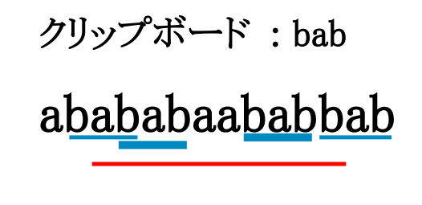

JOI22_copypaste3
Khi tiếp cận bài toán này theo hướng quy hoạch động, ta có thể hình dung ra một hàm như sau: \(f(a, b)\) là chi phí nhỏ nhất để đạt được \(x = a\) và \(y = b\). Từ trạng thái \((a, b)\) (có \(x = a\), \(y = b\)), ta có thể đi đến \((a + c, b)\), \((\emptyset, a)\) và \((a + b, b)\) sử dụng 3 thao tác đề cho.
Với hướng tiếp cận trên thì độ phức tạp quá lớn bởi vì có tận \(26^i\) xâu có độ dài \(i\). Nhưng ta chỉ cần xét các trạng thái \((a, b)\) mà \(a\) và \(b\) đều bằng một đoạn con liên tiếp của \(S\).
Từ đó dễ dàng giải quyết subtask 2, gọi \(f(i, j)\) là chỉ phí nhỏ nhất để \(x\) có độ dài \(i\), \(y\) có độ dài \(j\).
Do \(x\), \(y\) phải bằng một đoạn con liên tiếp của \(S\), gọi \(f(i, j)\) là chi phí nhỏ nhất để \(x\) bằng \(S[i:j]\) (đoạn con liên tiếp từ \(i\) đến \(j\) của \(S\)). Để xây dựng \(x\) bằng \(S[i:j]\) ta sẽ dùng hai thao tác 1 và 3. Khi đó ta cần tạo ra một xâu \(y\) (một đoạn con liên tiếp của \(S[i:j]\)) tối ưu. Ví dụ \(S[i:j]\) = "ababaababb" (phần nằm trên đường kẻ màu đỏ) và \(y\) = "bab".
Khi đó ta có các cách để tạo ra xâu \(S[i:j]\):
- Kí tự \(S[i]\) được thêm vào bằng thao tác 1, tức là \(f(i, j)\)\(=\)\(f(i + 1, j)\)\(+\)\(A\).
- Kí tự \(S[j]\) được thêm vào bằng thao tác 1, tức là \(f(i, j)\)\(=\)\(f(i, j - 1)\)\(+\)\(A\).
- Làm cho \(x\) bằng \(s[z:t]\) với chi phí \(f(z, t)\), sau đó chuyển sang \(y\) với chi phí \(B\), xây dựng xâu \(S[i:j]\) từ trái sang, ưu tiên sử dụng thao tác 3, nếu không dùng được thì mới sử dụng thao tác 1.
Từ công thức trên ta có lời giải với độ phức tạp \(O(n^5)\). Ta thấy để tính \(f(i, j)\) ta phải duyệt các cặp \((z, t)\) nhưng nếu ta sử dụng \(f(z, t)\) cập nhật cho các \(f(i, j)\) \((i \le z \le t \le j)\) thì sẽ đạt được độ phức tạp \(O(n^4)\).
Vì hàm quy hoạch động có xét hai chữ cái đầu được thêm vào từ thao tác 1, nên từ \(f(z, t)\) ta chỉ cần cập nhật cho các xâu mà chữ cái đầu và cuối đều được thêm vào từ thao tác 3, tức là các \(f(z, i)\) \((t < i)\). Đạt được độ phức tạp \(O(n ^ 3)\).
Nếu ta chuẩn bị một mảng \(next[i, j]\) là \(k\) nhỏ nhất sao cho \(j < k\) và \(s[i:j] = s[k:(k + j - i)])\), để từ \(f(z, t)\) cập nhật đi thì độ phức tạp đạt được \(O({n^2} \log(n))\).
Lưu ý khi tính mảng \(next\) mà sử dụng hash + map thì sẽ bị TLE subtask cuối, nên sử dụng thuật toán Z + kĩ thuật 2 con trỏ.